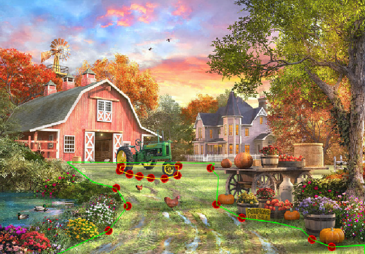

Help Jacques
Project Overview:
Help Jacques is a personal side project, a Serious Game designed for mobile and tablet devices. It's aimed at educating players about the French Revolution, targeting children aged 12-16 but suitable for all ages. The game's genre is Point-to-Click Adventure, similar to classics like 'Monkey Island'.
Gameplay Mechanics:
Players navigate Jacques, a farmer, through a 2D environment, interacting with objects and characters. The story-driven adventure focuses on Jacques' life during the French Revolution, emphasizing engaging storytelling and character development.
The Tools
Developing a game from scratch involves defining character movement and restrictions. For "Help Jacques", set in a 2D environment, we used a custom polygon tool for defining walkable areas and obstacles, inspired by Sebastian Lague's Path creator tool.
 Image: Autumn farm by Dominic Davison
Image: Autumn farm by Dominic Davison
Key to the game's navigation was a custom-built GPS system using the A* algorithm. Nodes were placed at strategic points, creating a graph for optimal pathfinding.
The A* Pathfinding algorithm, adapted from javidx9's tutorial, was implemented in C# to guide Jacques through the shortest path. The algorithm checks for line-of-sight nodes, creating a navigable path.
Depth perception was achieved by using a gradient polygon, as suggested by Groebelsloot. This technique scales the character's speed and size based on their position within the gradient, enhancing the 2D gameplay experience.
 Character Scaling and Speed Change
Character Scaling and Speed Change